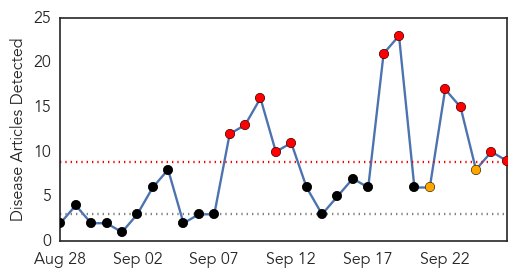
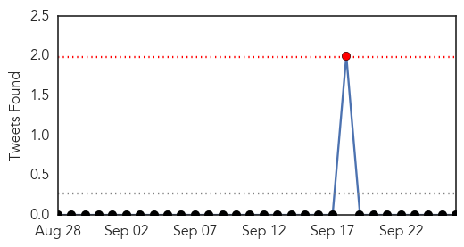

Influenza
30-Day Web Trend
11 alerts, 2 warnings

30-Day Twitter Trend
0 alerts, 0 warnings

Article Locations
Article Confidences
Top Articles:
- 0.998
- Indiana confirms 19 cases of respiratory virus
- 0.985
- The Daily Free Press — The Daily Free Press
- 0.965
- Getting ready for respiratory viruses
- 0.883
- Ebola most challenging epidemic in decades
- 0.867
- County health department kicks off annual flu vaccine drive
- 0.849
- Influenza Vaccination Coverage Among Pregnant Women – United States, 2013-14 Influenza Season
- 0.697
- Now one in seven patients cannot be cured using antibiotics after they were handed out too freely by GPs
- 0.664
- Hamilton preschooler dies of respiratory illness, district says in phone alert to parents
- 0.584
- Why We Don't Have A Cure For The Common Cold
Top Tweets:
-
No tweets found for Sep 26, 2014
Mumps
30-Day Web Trend
0 alerts, 0 warnings
30-Day Twitter Trend
0 alerts, 0 warnings

Article Locations

Article Confidences

Top Articles:
-
No articles found for Sep 26, 2014
Top Tweets:
-
No tweets found for Sep 26, 2014